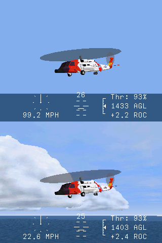
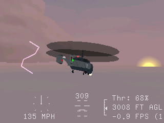

Scenery Detail

You can adjust the detail by turning graphics options on or off. To
do this you can go to Options->Graphics... or pressing any of the
following keys during simulation:
T Increase time of day (does not affect other
timmings).
SHIFT + T Decrease time of day (does not affect other
timmings).
V Reduce visiblie range.
SHIFT + V Increase visible range.
F9 Toggle ground base texture (not objects or landmarks).
F10 Toggle atmosphere.
F11 Toggle object texturing.
F12 Toggle clouds and horizon (also toggles cloud
"billboard" objects).
SHIFT + F9 Toggle dual pass depth, the
double rendering per frame in order to display heightfields more accurately.
SHIFT + F10 Toggle celestial objects (also toggles lighting).
SHIFT + F11 Toggle smoke trails.
SHIFT + F12 Toggle rotor prop wash effects.
For a complete list of keyboard keys see
Keyboard Keys List
For an explaination on the more complex graphics options see
Setup Graphics
On the right are two images displaying different levels of detail.
The first one has minimal graphics options turned on. The second
image below it has all graphics options turned on. You can experiment to
see how things look by toggling various graphics options on and off.
 Turning on too many graphics options can slow things down and result
in poor frame rates. The speed at which objects move is unaffected but
their granularity (how smooth they move) will feel "jumpy".
Turning on too many graphics options can slow things down and result
in poor frame rates. The speed at which objects move is unaffected but
their granularity (how smooth they move) will feel "jumpy".
 Note that in some cases the OpenGL hardware or software that you are
using can affect the quality of the graphics and/or how they appear.
It is recommended that you have OpenGL hardware or software that is
OpenGL version 1.2 or newer.
Note that in some cases the OpenGL hardware or software that you are
using can affect the quality of the graphics and/or how they appear.
It is recommended that you have OpenGL hardware or software that is
OpenGL version 1.2 or newer.
The graphics options can be adjusted in both free flights and
missions.
[
Weather

The weather can be adjusted during simulation by pressing
CTRL + W to cycle through all the available weather
conditions.
Each weather condition defines the following:
- Atmospheric Density
- Cloud Layers
- Sky Color
- Cloud "BillBoard" Objects
The image on the right shows the Stormy Dense weather
condition at dusk with cloud "billboard" objects. You must have
the graphics option Textured Clouds turned on in order to see
cloud "billboard" objects.
The weather condition will affect visiblity to some degree, but the
atmospheric density is also a function of the visiblity range (which is
not defined in the weather condition. To adjuts the visiblity range
press V or SHIFT + V.
The weather condition can be adjusted in both free flights and
missions. Missions usually define their own weather at startup. In
free flight you can specify the weather at startup, for more
information see
Free Flight.
The weather conditions are defined in
the file weather.ini you can manually edit this file to
add in your own weather conditions.
For a complete list of keyboard keys see
Keyboard Keys List
[